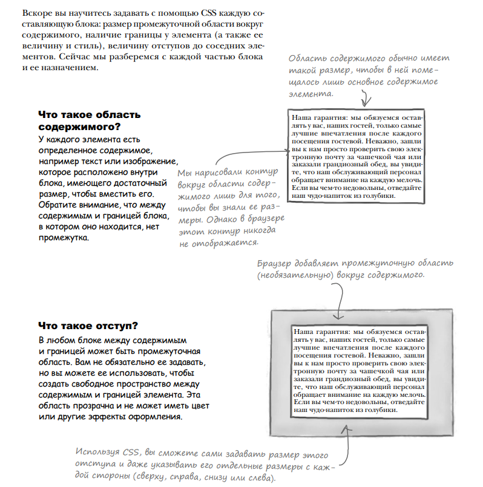

CHAPTER 1-3
Теги
Элемент:
- "a" - для создания гипертекстовых
ссылок на другую страницу.
Содержимое элемента "a" можно активизировать щелчком кнопкой мыши на веб-странице. - blockquote - цитирование "новая строка";
- q - цитирование "внутри эелемента";
- "ol" (li - элемент списка) упорядоченный список;
- "ul" (li - элемент списка) неупорядоченный список;
- "dl" включает в себя "dt" and "dd";
- "dt" - идет как заголовок;
- "dd" - идет как текст с большим отступом;
- code - для отображения кода из компьютерной программы;
- pre - для отформатированного текста, когда хотите, чтобы браузер отобразил его именно
- strong - особым образом выделить текст.
- специальный тег span - сам по себе он абсолютно ничего не делает, но для него можно применить CSS стили, которые позволят нам добавить нужный эффект к кусочку текста
Атрибуты
Открывающие теги могут иметь атрибуты.
- type - указывает на то, какой язык стиля мы используем;
- scr - определяет имя файла с изображением, которое задается в теге img;
- href (гипертекстовая ссылка) - указывает браузеру адрес назначения ссылки;
- title — это текстовое описание страницы, на которую вы ссылаетесь.
- alt просто нужен небольшой кусок текста с описанием изображения.
- пара атрибутов: width и height
Используйте элемент "a" для создания гипертекстовых
ссылок на другую страницу.
Содержимое элемента "a" можно активизировать щелчком
кнопкой мыши на веб-странице.
Веб-серверы/Пути
Веб-серверы обслуживают и хранят веб-страницы, которые созданы с помощью HTML и CSS.
Браузеры извлекают страницы и визуализируют их содержимое, основанное на HTML и CSS
Атрибуты всегда пишутся одинаково: сначала идет имя атрибута, затем знак равенства,
затем значение атрибута, взятое в двойные кавычки.
Относительный путь — это ссылка, указывающая на другие страницы вашего сайта относительно веб-страницы,
на которой эта ссылка находится,
точно так же как на карте место назначения имеет связь со стартовой точкой.
Используйте символы «..», чтобы сослаться на файл, который находится в родительской папке (по отношению к папке,
где находится файл, с которого вы ссылаетесь)
Не забывайте разделять части пути символом «/» (прямой слеш).
Блочные элементы отображаются отдельно, а строчные внутри основного текста страницы.
Элементы, изначально не имеющие HTML-содержимого, называются элементами без содержимого.
Если вам нужно использовать элемент без содержимого, например "br" или "img", то просто указывайте
открывающий тег.
Это удобная краткая форма, уменьшающая количество кода в вашем HTML-документе.
Специальные символы - ссылка на символи для символа ">" аббревиатура ">", а для символа "<" — "<"
Справочники
Ccылки/Справочники
- Справочник: HTML & XHTML: The Definitive Guide (O’Reilly)
- Ссылки на основные специальные символы можно посмотреть здесь: http://www.w3schools.com/tags/ref_entities.asp.
- Более полный их список вы найдете здесь: http://www.unicode.org/charts/.
- O’Reilly’s CSS Pocket Reference.
CHAPTER 4
Советы по выбору хостинговой компании
Советы по выбору хостинговой компании
- Техническая поддержка: имеет ли хостинговая компания хорошую систему по обработке возникающих у вас технических вопросов?
В лучших компаниях на ваши вопросы ответят быстро по телефону либо по электронной почте. - Передача данных:
существует ограниченное количество страниц и данных, которое хостинговая компания позволит вам отправлять вашим посетителям в течение месяца.
Большинство компаний в своих основных планах предлагают приемлемое количество передаваемых данных для небольших сайтов.
Если же вы создаете сайт, у которого, как предполагается, будет много посетителей, то вам нужно обратить на это особое внимание. - Резервные копии: регулярно ли хостинговая компания делает резервные копии ваших страниц и данных, которые можно будет восстановить, если на сервере произойдет аппаратный сбой?
- Доменные имена: учитывает ли хостинговая компания имя домена при ценообразовании?
- Надежность: большинство хостинговых компаний заявляют, что они осуществляют поддержку сайтов до 99 % общего времени и более.
- Дополнительные возможности: входят ли в ваш пакет какие-нибудь дополнительные возможности, такие как адреса электронной почты, форумы или поддержка сценарных языков (что-то, что в будущем может вам пригодиться)?
Доменное имя - name.come
Имя сайта - www.name.come
Доменные имена контролируются централизованным учреждением (называемым ICAAN).
FTP
FTP -протокол передачи файлов
FTP - команды:
- dir: выводит содержимое текущего каталога.
- cd: изменяет текущий каталог.
Здесь символы «..» также обозначают переход вверх на один каталог. - pwd: показывает, в какой директории вы сейчас находитесь.
- put <имя_файла>: пересылает указанный файл на сервер.
- get <имя_файла>: извлекает указанный файл из сервера назад на ваш компьютер.
SFTP, или Secure File Transfer Protocol (протокол безопасной пересылки данных), —
это более безопасная версия FTP,
которая работает примерно так же.
Только перед приобретением SFTP убедитесь, что выбранный FTP-клиент также поддерживает егo
Список наиболее популярных FTP-клиентов для Mac и Windows.
- Fetch (http://fetchsoftworks.com/) — один из наиболее популярных FTP-клиентов для Mac. $
- Transmit (http://www.panic.com/transmit/) $
- Cyberduck (http://cyberduck.ch/) FREE
- Smart FTP (http://www.smartftp.com/download/) $
- WS_FTP (http://www.ipswitch.com/products/fi le-transfer.asp).
Основная версия БЕСПЛАТНАЯ, $ для профессиональной версии - Cyberduck (http://www.cyberduck.ch). БЕСПЛАТНO
Для Mac OS X:
Для Windows:
URL-адреса
Унифицированный указатель ресурса (URL) — это сетевой адрес,
который может быть использован для размещения в Сети какой-либо информации,
включая HTMLстраницы, аудио, видео и многие другие формы веб-содержимого.
Кроме того, для точного определения месторасположения ресурса URL включает протокол,
который нужно использовать, чтобы найти этот ресурс.
HTTP - протокол передачи гипертекстовых файлов
Абсолютный путь — это то, что нужно серверу для определения местоположения требуемого файла.
Абсолютный путь — это путь от корневой папки к файлу.
Oтносительные пути, чтобы сослаться на собственные страницы на этом же сайте, и URL-адреса,
чтобы создать ссылку на страницы с других сайтов.
Атрибут target говорит браузеру, где открыть веб-страницу, которая указана
в атрибуте href этой ссылки.
Если атрибута target нет, то браузер открывает
страницу в текущем окне.
Если в качестве значения атрибута target используется
“-blank”, то браузер открывает ссылку в новом окне
CHAPTER 5
JPEG;PNG;GIF;
Понятие «лучше» обычно определяется как комбинация качества изображения и размера файла.
JPEG-фотография чаще всего намного меньше, чем фото в формате PNG или GIF такого же качества,
в то время как логотип PNG или GIF обычно выглядит лучше и имеет меньший размер,
чем тот же логотип в формате JPEG.
Если вы размещаете прозрачное изображение на своей веб-странице, то убедитесь,
что цвет подложки этого изображения совпадает с цветом фона.
Вы можете использоватьформат PNG или GIF для своего прозрачного изображения.
IMG&URL
≪img src="http://www.starbuzzcoffee.com/images/corporate/ceo.jpg>
URL — это путь к рисунку, поэтому имя файла в конце — всегда имя файла с данным рисунком.
Нет такого понятия, как изображение, используемое по умолчанию.
Пример ссылки на само изображение:
<
"a href="html/seattle_downtown.html"
"img src="thumbnails/seattle_downtown.jpg"
alt="iPod в бизнес-центре Сиэтла, Вашингтон" "a">
CHAPTER 6
Структра HTML
CHAPTER 7
Применению классов CSS
Чтобы добавить комментарий в CSS-код, просто поместите его между символами /* и */
Краткое руководство по применению классов CSS
Cуществует ли селектор, соответствующий элементy?
Представьте, что вам нужно узнать значение свойства font-family для элемента.
Первое, что вы должны проверить: есть ли в вашем CSS-файле селектор для этого элемента.
Если он там есть и при этом содержит свойство font-family с конкретным значением,
то это значение и будет применяться
для вашего элемента.
Как насчет наследования?
Если для вашего элемента селектора не нашлось, то придется полагаться на наследование.
Итак, посмотрите на родительские элементы, их родительские элементы и т. д.,
пока не найдете определенное в них свойство, которое вам нужно.
Если вы его найдете, то это и будет значение данного свойства для вашего элемента.
Снова не нашлось нужное свойства Тогда используйте установленное по умолчанию
Если ваш элемент не наследует значение ни от одного из своих предков, то используется
значение свойства,установленное браузером по умолчанию. На самом деле эта схема немного
сложнее,чем мы здесь описали, но подробно мы ее рассмотрим чуть позже.
Сразу несколько эелементов соответствуют этому элементу
<p class="greentea raspberry blueberry" >
Итак, побеждает правило с наивысшим приоритетом.
- p { color: black;} - Это правило для любого элемента ‹p›.
- .greentea { color: green; } - Это правило для любого члена класса greentea.
Оно более приоритетно. - p.greentea { color: green; } - Это правило только для абзацев из класса
greentea,
поэтому оно еще более приоритетно. - p.raspberry { color: blue; }
p.blueberry { color: purple; }
Эти правила тоже лишь для абзацев из конкретного класса.
Так что у них с правилом p.greentea одинаковый приоритет.
CHAPTER 8(W3C)
W3C-валидатор: http://validator.w3.org
CSS-валидатор вы найдете по адресу: http://jigsaw.w3.org/css-validator/
Распространенные форматы (и соответствующие им файловые расширения):
Шрифты TrueType: .ttf -
Шрифты TrueType и OpenType тесно связаны между собой;
Шрифты OpenType: .otf -
Формат OpenType основан на TrueType (он новее, чем TrueType).
Шрифты Embedded OpenType: .otf -
Embedded OpenType (EOT) – это компактная форма OpenType.
Данный формат является проприетарным (Microsoft) и поддерживается только браузером Internet Explorer.
Шрифты SVG: .svg -
Scalable Vector Graphics или SVG – это графический формат общего назначения, используемый в случае со шрифтами SVG для представления символов.
Шрифты Web Open Font Format: .wof
Web Open Font Format базируется на TrueType и разрабатывается в качестве стандарта для веб-шрифтов. Хорошо поддерживается большинством современных браузеров
Способы задания цвета
- название
- процентное соотношение(rgb)
- шестнадцатеричный код(rgb)- #rrggbb
(1. 1-9 A-F; 2. c(12)* 16)=192+12=204=rr
CHAPTER 9
Блочная модель
.png)
.png)
.png)
.png)
@media screen and (min-device-width: 481px)(если экран равно или меньше);
@media screen and (max-device-width: 480px)(если экран больше);
@media print { body {font-family: Times, "Times New Roman", serif; }(для распечатки)}
CHAPTER 10
Каскадность
- Cоберите вместе все таблицы стилей.
- Найдите все соответствующие объявления свойства.
- Возьмите все, что нашли, и отсортируйте.
- Теперь отсортируйте все обьявления по приоритетам.
АВТОРСКИЕ, ПОЛЬЗОВАТЕЛЬСКИЕ, БРАУЗЕР; - Наконец, отсортируйте все конфликтные правила в том порядке,
в котором они появляются в отдельных таблицах стилей.
"Какой мой приоритет?"
0-идектификаторы 0-теги(селекторы) 0-классы
.png)
.png)
CHAPTER 11
display:table;
display:table-row;
CHAPTER 12
"time datetime="2012-02-18">2/18/2012 time" - новый тег
video
.png)
.png)
CHAPTER 13
.png)
.png)
.png)
CHAPTER 14
.png)
.png)
.png)
.png)
.png)
.png)
.png)
.png)
CSS
Свойство:
- color - для задания цвета текста элемента
- top - oпределяет позицию верхнего края элемента
- left - расположить по левому краю
- padding - отступ между краем элемента и его содержимым
- border - рамк вокруг элемента
- свойство text-indent - красная строка для больших текстов
- text-align - для выравнивания текста по левому краю,
по центру или по правому краю(используется для выравнивания строчных элементов, применяется родительскому элементу) - letter-spacing - интервал между символами в пределах элемента
- line-height - межстрочный интервал в пределах элемент (line-height - font-size = размер между строками)
- list-style - контролировать то, как будут выглядеть пункты списка
- text-decoration-line: underline | line-through | overline | none;
- text-decoration-line: solid | double | dotted | dashed | wavy(волнистая линия);
- Свойство text-decoration-color задает цвет линии у текста. Свойство следует использовать совместно со свойствами text-decoration-line и text-decoration-style.
font: курсив жирность размер_шрифта / межстрочный_интервал семейство
font: font-style font-variant font-weight font-size/line-height font-family -
порядок-синтаксис для сокращения
- font-family - стиль шрифта
serif - засечки; sans-serif- без засечек; monospace - фиксированная ширина;
cursive - рукописные; fantasy - художественные и декоративные; - font-size - делает шрифт больше или меньше
- font-style - для выделения текста курсивом
- fonr-weight -задает толщину шрифта
(lighter normal bold bolder)
Используйте его, чтобы сделать текст полужирным
% - размер шрифта, заданный в процентах, определяет
высоту шрифта относительно высоты других шрифтов(родительского);
em - размер шрифта, относительная величина. С помощью em вы задаете масштабный коэффициент.
(font-size: 1.2em; - означает, что родительский эл. * 1.2 )
FontSquirrel (http://www. fontsquirrel.com/)
text-decoration
- underline - под
- overline - над
- line-through - вычеркивание
- blink - вокруг
- none
a - состояние ссылки(LoVe HAte)
- link - непосещены ссылки
- visited - посещены
- hover - навидение мышки
- active - появиться когдапользоватеь нажмет на него
- focus - обратить на себя внимание
border
- border:solid-сплошная; dotted-точечная; dashed-тире; ridge задает границу в виде выпуклой линии; double - двойная линия; border:толщина цвет тип границы/ в любом порядке
- border: Если задано два значения, то первое значение задает скругление для для верхнего левого и нижнего правого, второе - верхнего правого и нижнего левого углов
background
Порядок свойств значения не имеет. Ненужные свойства можно опускать - в этом случае оно примет значение по умолчанию.
Свойства background-position и background-size задаются через слеш и в этом случае порядок имеет значение (сначала позиция, потом размер).
- background-color - фоновый цвет
- background-image - поместить изображение под элементом
- background-position: два значения через пробел;Ключевые слова для вертикали: top, center, bottom. Ключевые слова по горизонтали: left, center, right
- background-size: auto-фон будет иметь натуральный размер, такой, как реальный размер картинки фона; cover-картинка будет стараться поместиться целиком, но это не всегда будет получаться, поэтому какая-то ее часть будет обрезаться. Блок всегда будет покрыт картинкой целиком; contain-блок в общем случае будет покрыт картинкой не целиком (зато картинка всегда будет видна вся, хоть и в уменьшенном варианте)
- Единицы для размеров и auto могут быть использованы в различных комбинациях, например, так: auto 20px, или 30% 20px, или auto 30% и так далее. В этом случае первый параметр задает размер фона по ширине, а второй параметр - размер фона по высоте. Если указан один параметр - то он будет задавать размер фона и по ширине, и по высоте одновременно
- Свойство background-attachment задает каким образом прокручивать фоновую картинку элемента: вместе с текстом или текст будет скользить по картинке
- fixed Картинка фона будет неподвижной, а текст будет скользить по ней
- scroll Картинка фона будет прокручиваться вместе с текстом.
- local Фон фиксируется с учетом поведения элемента. Если элемент имеет прокрутку, то фон будет прокручиваться вместе с содержимым, но фон выходящий за рамки элемента остается на месте
- Свойство background-clip задает как фоновая заливка или фоновая картинка будет размещаться относительно элемента
- border-box Фон залезет под границу
- padding-box Фон не будет залезать под границу
- content-box Фон будет только над содержимым
- Свойство background-origin задает то, как фоновая картинка (именно картинка, не заливка) будет размещаться относительно элемента
- border-box Фоновая картинка залезет под границу
- padding-box Фоновая картинка не будет залезать под границу
- content-box Фоновая картинка будет только над содержимым
float
Плавющий элемент. Выходит из общего потока
Получается, что элементы, которым задано свойство float, не расширяют своего родителя по высоте
Для решения такой проблемы существует специальное свойство clear, которое отменяет обтекание. Значение left отменяет обтекание слева, значение right - справа, а значение both - с обоих сторон. Это значение и используется чаще всего.
При этом clear следует давать тому элементу, на который не должны налазить плавающие элементы, то есть в нашем случае его стоит дать второму диву.
Давайте сделаем так, чтобы плавающая картинка расширяла наш див по высоте. Для этого используется хитрый прием - поставим после картинки див без текста с классом clearfix. Наша картинка плавающий элемент и не расширяет родителя по высоте, но див-клиарфикс - не плавающий и влияет на высоту родителя. Так как диву-клиарфиксу задано свойство clear, то получится, что он будет отпихиваться картинкой вниз и стоять под ней, расширяя при этом родителя по высоте. Сам див-клиарфикс пустой и не виден на экране, но при этом расширяет родителя по высоте.
position
- absolute-элемент переместится туда, не взирая на то, что там будут располагаться другие элементы и просто станет поверх их. Говорят, что при этом элемент выпадает из нормального потока документа: все остальные элементы будут вести себя так, будто нашего элемента нет.
- На самом деле указания координат при абсолютном позиционировании не обязательно. Если элементу просто написать position в значении absolute, то он станет абсолютно спозиционированным, но останется стоять в том же месте, где и стоял. При этом все остальные элементы будут вести себя так, будто нашего элемента нет и могут налезть на него.
- static-элементы заливаются на страницу в общем потоке и вы не определяете их месторасположение на странице, — браузер сам решает, где они отобразятся. Чтобы убрать элемент из общего потока, вы можете использовать свойство float. При этом можно определить, будет элемент «плавать» слева или справа, но в коненом счете браузер сам решает, где именно располагать этот элемент
- fixed-мы разберемся с фиксированным позиционированием. Оно похоже на абсолютное, разница проявляется в том, как ведут себя эти типы позиционирования при наличии полосы прокрутки
При прокручивании страницы абсолютно спозиционированные элементы будут прокручиваться вместе со страницей
фиксированный блок занял всю ширину экрана, ему нужно задать ширину 100%
- relative-oтносительное позиционирование задается с помощью значения relative для свойства position. Такое позиционирование позволяет сдвигать элементы относительно своего текущего положения на заданную величину. При этом все остальные элементы страницы будут думать, что элемент стоит там, где и стоял изначально. То есть при таком типе позиционирования элемент не выпадает из нормального потока
Если элементу задан relative, а его потомку - absolute, то этот потомок будет позиционироваться относительно своего родителя, а не относительно окна браузера
Как правило, в таком случае родителю указывают relative без смещений. В этом случае с этим родителем ничего не происходит, но все его потомки теперь будут позиционироваться относительно него.
Может быть и такое, что у родителя задан absolute. В этом случае потомки с absolute также будут позиционироваться относительно такого родителя, а не относительно окна браузера
селекторы + знаки
- дочерний селектор > - непосредственный потомок
- Соседний селектор + позволяет выбрать элемент по его соседу сверху
- Родственный селектор ~ позволяет выбрать все элементы, находящиеся после заданного элемента внутри одного родителя
- a[href*="test"] - Селектор атрибута по тексту применяет стиль к элементу, у которого значение атрибута тега содержит определенный текст
- a[href^="https://"]- start
- [href$=".html"] - end
- [class|="text"] - hyphen
- [class~="test"] cелектор по одному из значений атрибута задает стиль элементу, у которого в атрибуте есть хотя бы одно из указанных значений. При этом все значения атрибута должны быть разделены пробелом
inline-block
- можно задать ширину и высоту, подобно блочным элементам
- if у элемента не задана ширина/высота, то его ширина/высота сформируется содержимым, подобно строчным элементам
- если расположить несколько элементов рядом, то они выстроятся в ряд
margin or padding
Свойство margin применяется не только для задания отступов, но и для центрирования блочных элементов. Для этого правый и левый отступ следует задать в значение auto;
z-index
Порядок наложения элементов можно регулировать с помощью свойства z-index, принимающего своим значением целые положительные или отрицательные числа, либо ноль. Свойство работает только для элементов, у которых значение position задано как absolute, fixed или relative.
При использовании данного свойства правило наложения элементов следующее: выше будет тот элемент, у которого значение z-index больше
Если z-index у элемента не задан, то его значение следует трактовать как 0. Это значит, что элемент со значением z-index, равным -1, будет ниже элемента без z-index.
flex
Если у флекс элементов не задана ширина, то эта ширина сформируется по содержимому
Про флексбоксы можно говорить в двух терминах: первое это - ряд или колонка, второе - в терминах осей. С рядами и колонками мы уже разобрались, давайте теперь разберемся с осями. Понимание осей нужно для того, чтобы выравнивать элементы по горизонтали или по вертикали. При работе с флекс элементами всегда существует главная ось и поперечная. Мы можем элементы выравнивать по главной оси и поперек главной оси. Главная ось может иметь 4 направления: слева направо, справа налево, сверху вниз и снизу вверх. Направление поперечной оси зависит от направления главной: если главная ось горизонтальна, то поперечная направлена сверху вниз, если главная ось вертикальна, то поперечная направлена слева направо. Других направлений поперечная ось иметь не может.
Если родителю флекс элементов не задана высота, то по высоте он будет растягиваться своим содержимым, то есть высотой потомков
Если родителю флекс элементов не задана ширина, то по ширине он займет все доступное место
Вместо значения flex для свойства display родителю можно поставить значение inline-flex. В этом случае этот родитель будет вести себя, как строчно-блочный элемент
- Свойство align-items по умолчанию имеет значение stretch. Это значение растягивает элементы на всю ширину вдоль поперечной оси
Продвинутая работа с флексбоксами
- специальное свойство flex-basis, задает размер элемента вдоль главной оси
- При желании это пустое пространство можно пропорционально разделить между нашими элементами. Это делается с помощью свойства flex-grow, задаваемого флекс-элементам. Значением этого свойства служит безразмерное число
Продвинутые свойства для текста на CSS
- Тег pre задает вывод текста в том виде, как он набран в документе: со всеми отступами (табуляцией), пробелами и переносами строк
- Свойство letter-spacing устанавливает интервал между буквами
- Свойство word-spacing устанавливает интервал между словами
- text-transform: capitalize(заглавным первыую букву каждого слово в предложении)/uppercase/lowercase/none
- Свойство font-variant позволяет сделать маленькие (строчные) буквы ЗАГЛАВНЫМИ, но маленького размера. Такая запись называется капителью: small-caps/none
- Свойство text-align-last устанавливает выравнивание последней строки текста: по левому краю, по правому, по центру, по левому и правому краям одновременно.
Обратите внимание на то, что если в элементе (например, в абзаце), только одна строка - то она считается одновременно первой и последней и выравнивание у нее будет такое, как задано в text-align-last, а не в text-align. - Псевдоэлемент first-letter позволяет задать стили первой букве текста в элементе
- Псевдоэлемент first-line позволяет задать стили первой линии текста
- Свойство white-space устанавливает как переносить текст на новую строку, а также как отображать пробелы между словами и переносы строк (места, где был нажат Enter при наборе кода)
- Свойство tab-size устанавливает размер отступа, созданного клавишей Tab. Работает только если задано свойство white-space в значении pre или pre-wrap, а также для тега pre. Значением свойство принимает целое положительно число, которое задает количество пробелов, которому будет соответствовать клавиша Tab. Значение по умолчанию: 8 пробелов
- Свойство overflow указывает браузеру, как поступать с содержимым (текст, картинки, другие блоки), которое вылазит за границы блока (за его ширину или высоту). Браузер может скрыть вылезающую часть(hidden), добавить полосы прокрутки(scroll/auto) или ничего не делать (visible)(оставить как есть - вылезшим за границы)
- Свойство text-overflow добавляет троеточие в конец обрезанного текста в знак того, что текст не помещался в блок и был обрезан(ellipsis) или значение по умолчанию(clip). Для работы свойства текст должен быть обрезан через свойство overflow или свойство overflow-x в значении hidden, auto или scroll. Если задано visible (а так и есть по умолчанию) - text-overflow работать не будет.
- Свойство word-break позволяет перенести буквы длинного слова на новую строку, если это слово не влазит в ширину контейнера
- Свойство columns задает одновременно ширину и количество колонок в многоколоночном тексте. Является свойством-сокращением для column-count и column-width.
- Свойство column-count задает рекомендуемое количество колонок в многоколоночном тексте. Их реальное количество может отличаться от заданного, в зависимости от ширины колонки и размера промежутка между ними
- Свойство column-width задает ширину колонок в многоколоночном тексте
- Свойство column-rule задает границу между колонками в многоколоночном тексте. По принимаемым значениям совпадает со свойством border
- Свойство column-gap задает расстояние между колонками в многоколоночном тексте, а также расстояние между столбцами в гриде
- Свойство column-span задает количество столбцов, на которые должен растягиваться элемент в многоколоночном тексте. Свойство значением принимает либо число 1, либо ключевое слово all. При значении 1 элемент будет охватывать одну колонку, а при значении all - все колонки.
- Свойство user-select управляет поведением выделения текста и других элементов на странице
- Свойство pointer-events позволяет убрать реакцию элемента на события мыши. Свойство принимает два значения. Значение none убирает реакцию, а значение auto заставляет элемент вести себя как обычно (значение по умолчанию)
- Псевдоэлемент selection позволяет задать цвет и фон выделенному тексту
- Псевдоэлемент after вставляет текст после элемента. Используется только совместно со свойством content, которое задает текст, который следует вставить
- Псевдоэлемент befor вставляет текст перед элемента. Используется только совместно со свойством content, которое задает текст, который следует вставить